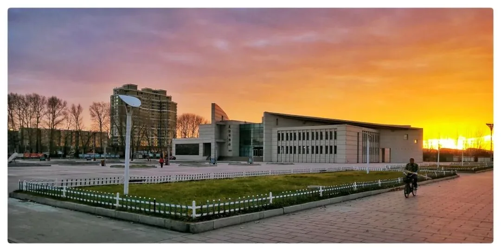
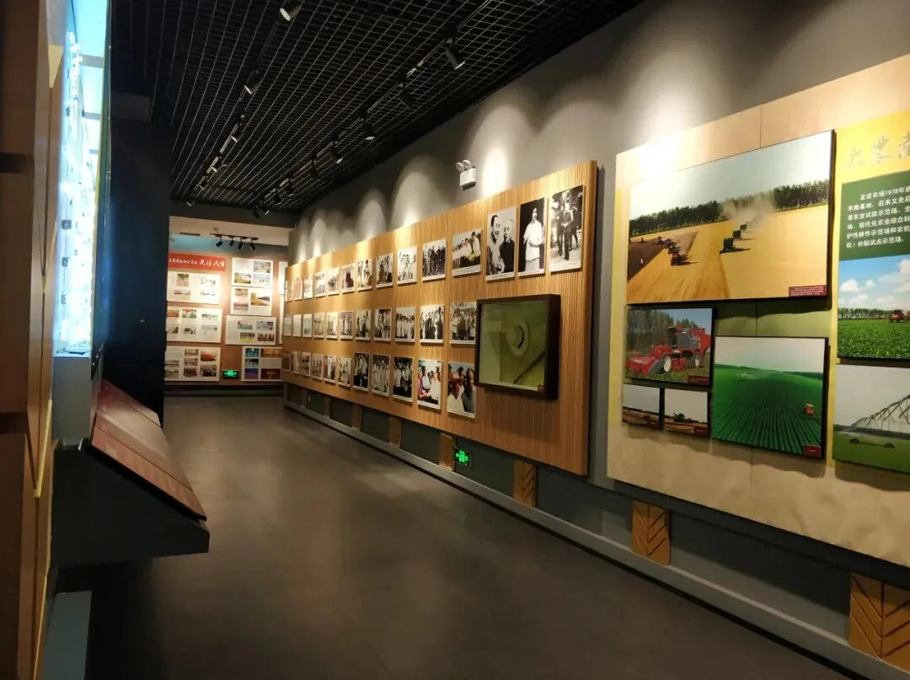
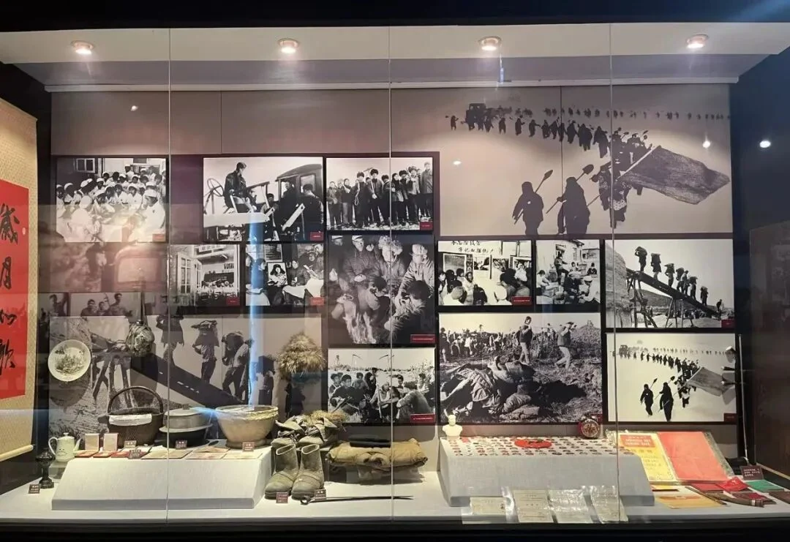
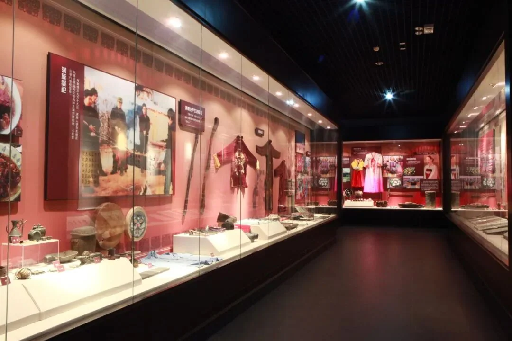

到这里看什么
可以从历史展廊沿时间看。七星河流域的古代遗存之后，是国营友谊农场的选址、开荒与中苏合作。铁路运来的卡车、农机和谷物干燥设备，也能和老照片中的人员、工作场景对照起来。
垦荒群像和生活场景讲述了早期建设者的经历。民族风情展厅陈列服饰及日常器具。想细看援建农机、苏联专家及家属，或女收割机手刘瑛与童延兰的老照片，可以打开博物馆展陈选图。





县城里的地方史
馆址在友谊镇西直路，与友谊公园隔路相对。从汉魏时期的挹娄遗存到国营农场开垦，这里可以看到友谊地区的地方史。

可以从历史展廊沿时间看。七星河流域的古代遗存之后，是国营友谊农场的选址、开荒与中苏合作。铁路运来的卡车、农机和谷物干燥设备，也能和老照片中的人员、工作场景对照起来。
垦荒群像和生活场景讲述了早期建设者的经历。民族风情展厅陈列服饰及日常器具。想细看援建农机、苏联专家及家属，或女收割机手刘瑛与童延兰的老照片，可以打开博物馆展陈选图。



